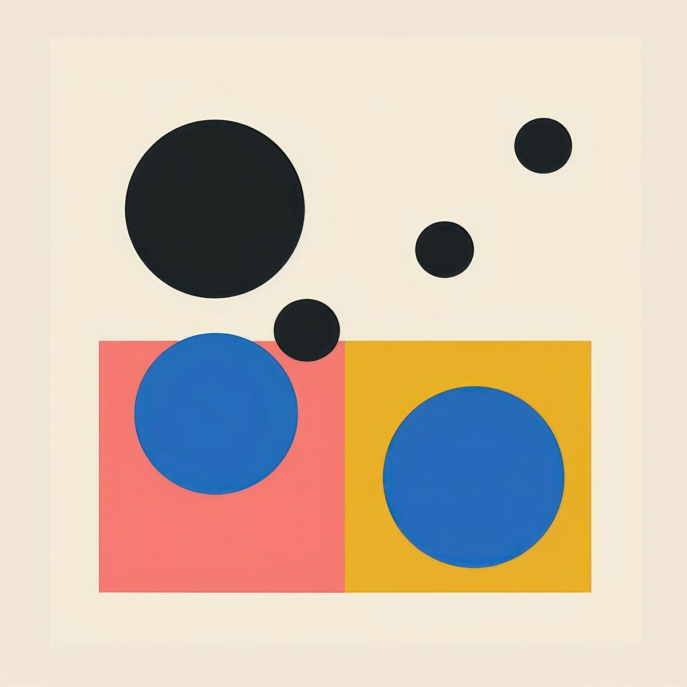

Методы работы с 3D
Представим обычную композицию в After Effects. На экране находится текст, несколько геометрических фигур и фоновое изображение. Мы можем перемещать эти элементы, изменять их масштаб, поворачивать, менять прозрачность и создавать достаточно сложную анимацию.

Однако у такой композиции есть ограничение: все элементы существуют на плоскости экрана. Мы видим их ширину и высоту, но не можем по-настоящему обойти изображение сбоку или посмотреть, что находится за ним. В графическом дизайне это не обязательно проблема. Плоскость обладает собственными выразительными возможностями. Плакат, типографическая композиция или абстрактная анимация могут прекрасно работать без какого-либо объёма.
Но иногда художественная задача требует другого отношения к пространству. Например, мы хотим создать заставку, в которой камера пролетает между буквами заголовка. Или собрать сцену из нескольких десятков фотографий, расположенных на разной глубине. Или разместить трёхмерный логотип внутри композиции, осветить его и заставить вращаться. Для таких задач нам необходимо третье измерение.
Трёхмерное пространство позволяет работать не только с расположением элементов внутри кадра, но и с расстоянием между ними, направлением взгляда и положением наблюдателя.
При этом использование 3D не означает, что каждая работа должна выглядеть реалистично. Объёмная графика может оставаться предельно абстрактной. Трёхмерными могут быть буквы, линии, плоскости, геометрические тела или совершенно условные формы. Для моушн-дизайнера гораздо важнее понимать, какие выразительные возможности предоставляет пространство и когда они действительно необходимы.